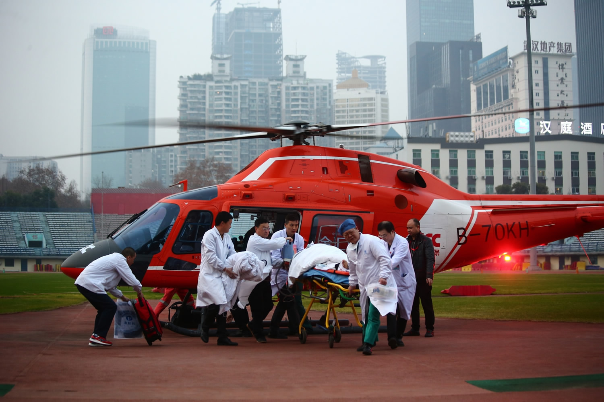
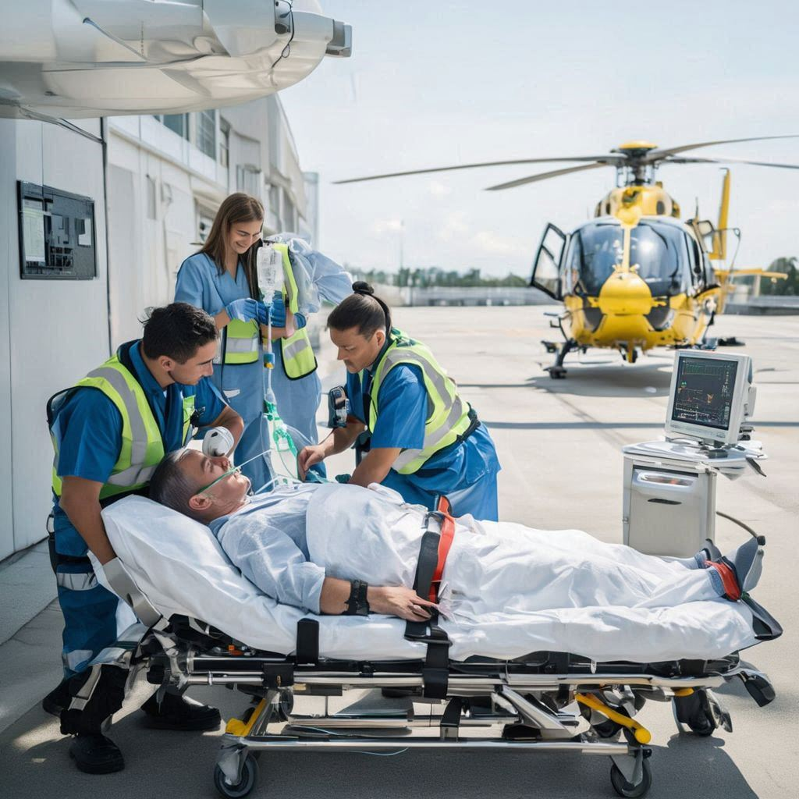
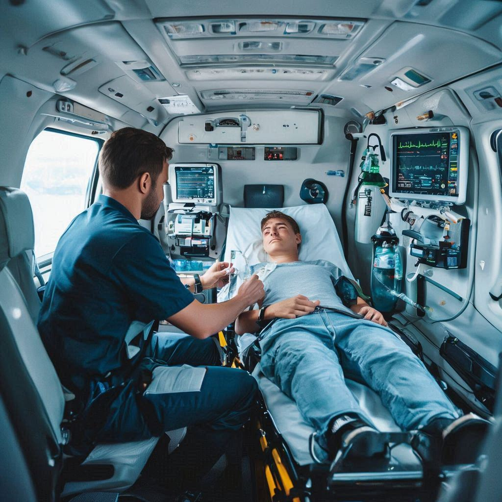

01
📞
Call & Case Assessment
Share patient details, location, and urgency. We assess requirements and confirm feasibility quickly.
When minutes matter, SkyRescue provides fast, medically supervised helicopter transfers with ICU-ready equipment and trained critical-care teams—ensuring safe, rapid access to advanced treatment.
Designed for urgent patient transfers where faster access can make a difference.
A helicopter air ambulance is a specially equipped aircraft designed to transport critically ill or injured patients quickly and safely from one location to another.
It is typically used in situations where road travel is too slow, difficult, or medically risky, especially in emergency cases, remote regions, accident zones, or locations with limited healthcare access.
These helicopters are fitted with advanced life-support systems, oxygen supply, emergency medicines, and essential monitoring equipment, while trained medical professionals remain onboard to provide continuous care during transit.

Helicopter air ambulance transport is designed for situations where speed, access, and continuous medical supervision are essential. It enables rapid transfers from hard-to-reach locations and reduces travel time when road transport may be delayed.
A structured workflow ensures fast dispatch, continuous medical monitoring, and safe hospital handover.
Share patient details, location, and urgency. We assess requirements and confirm feasibility quickly.
We arrange the helicopter, onboard setup, permissions, and hospital coordination for a smooth transfer.
The medical team stabilizes the patient, monitors vitals, and ensures safe handover into air transport.

Continuous monitoring continues during transit. On arrival, we complete handover and transfer to care teams.

Helicopter transport is typically chosen when speed, access, and continuous medical monitoring are essential.
For time-sensitive cases where rapid transport can support faster access to treatment.
When road connectivity is limited or travel time is too long for the patient’s condition.
To move patients quickly between hospitals for specialized care and advanced facilities.
Ideal for locations where terrain, traffic, or distance makes ground transport challenging.
Tap an icon to reveal details.
Reduces travel time for emergencies where every minute matters.
Continuous supervision in transit with essential monitoring support.
Supports transfers from difficult terrain and limited road connectivity.
Structured coordination from request to dispatch and hospital handover.
Medical setup designed for patient stability and safe transport.
Organized handover to the receiving clinical team for continuity of care.
Share your location and patient details. Our team will coordinate the next steps and guide you through the process.